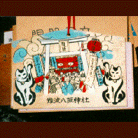
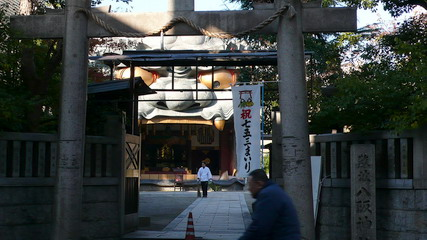
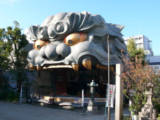
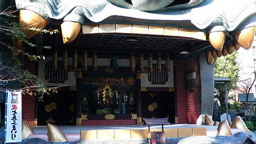
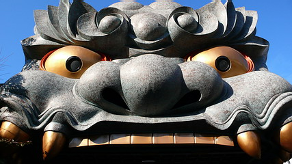
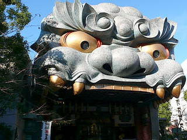
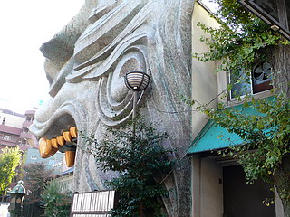

難波八阪神社/大阪府大阪市
大阪の街を散歩してたらこんなスゴイものに出くわした。
それは難波八阪神社といって、いかにもその辺によくある「御近所の神社」といった程度の規模のものなのだ。
私もその前を何気なく通りかかっただけなのに、素通りを許さない妖気と視線を感じて神社の中をふとみたのだ。
するとそこには、なんと高さ５メートルはあろうかという巨大な獅子（獅子舞のかぶってるアレ）がこちらを見据えてるではないか。なんだなんだ、これは。
小走りに近づいていくと、その巨大獅子の口の中がステージになっている。
見上げれば鼻の穴はスピーカー、目玉は照明になっているじゃないか。なんだこれは。なんでこんなところにステージが、しかも獅子舞のかぶってるみたいな。
しかしそんなクエスチョンの答を出すスキもなく、私の目に飛び込んできたのは、ズラリと並んだお守りの自動販売機である。
良く見ればタバコの自販機と同じタイプのものでお札も使える。
お守りというものがタバコの銘柄とおなじ位種類があるということをそのとき始めて知った。流石にまとめ買いボタンはなかったけど。
おみくじも相当なものだ。合格おみくじ、恋のおみくじ、七福神おみくじ、招き猫おみくじ、商売繁盛、開運幸福、夢みくじ、、、、、挙げきらん。
そんな開運グッズのなかでも傑作だったのが、苦手科目克服の絵馬。
社会、国語、英語、数学、理科のそれぞれの絵馬があって苦手科目を選んでくださいな、というシステム。
まあ、何の悩みもない人ならいいのだが、こんなとこに受験直前の浪人生なんぞ来ちゃったひにゃあ、もう金幾らあっても足りないですよ。その上、恋の悩みや健康の悩みでもあったら、、、まあ小銭足りなかったら両替機もあるしがんばってみてください。
追記；風の便りによると最近ここの神社、経営方針の変更（神主さん変わった？）により大量のお守り自販機が無くなってしまったそうだ。
諸行無常ですなあ。
1997.4.
追記
ここ数年で何度か八阪神社に寄っているが以前あった自販機は無くなってしまい、かつての信仰無法地帯状態ではなくなった。

でも獅子頭の社殿は相変わらず訪れる人を睨みつけている。
 
 
社殿は裏に民家みたいな建物がくっ付いている。

ところでここの神社の脇にいつ行っても「社長募集中！」と書かれたワゴン車が停まっているのだが、未だに新社長は見つからないんでしょうか…
2007.11.
珍寺大道場 HOME